<!doctype html>
<html>
<head> 
<meta charset="UTF-8">
<title>Colonial City of Santo Domingo</title>
	
	
	<!-- Adobe Fonts-->
	<html>
	<body>
	<head>

 <link rel="stylesheet" href="https://use.typekit.net/tyv1wfr.css">

	</head>
	</body>
	</html>
<!-- Font Awesome-->
	<script src="https://kit.fontawesome.com/87004b1bd0.js" crossorigin="anonymous"></script>
	
	<!-- external stylesheet-->
	<link href="css/hugrid.css" rel="stylesheet"> 
	<link href="css/normalize.css" rel="stylesheet"> 
	<link href="css/base.css" rel="stylesheet"> 
	<link href="css/style.css" rel="stylesheet">
	
	
</head>

<body>
	
<header>
	
	
	<div class="logo"></div>
	<div class="navigationbar"></div>
	<div class="container">
	<nav>
	<ul class="navigation">
	
	<li><a href="#monuments">Monuments</a></li>
	<li><a href="#culture">Culture</a></li>
	<li><a href="#monuments">Location</a></li>
	<li><a href="#attractions">Attractions</a></li>
	<li><a href="#location">Location</a></li>
	<li><a href="#testimonials">Testimonials</a></li>
	<li><a href="#gallery">Gallery</a></li>
	<li><a href="#videos">Videos</a></li>
	<li><a href="#about">About</a></li>
	<li><a href="#signup">Sign Up</a></li>
	
	</ul>
		
		<div class="headerbreak"></div>
	</nav>
	</div> <!-- end container-->
	</header>
	
<!-- Subheader-->
	
		

	
	
	
	
	
	<!-- Hero section-->
	
	<section class="hero-image">
    <div class="container">
	</div>
	</section>
	
	<!-- Introduction-->
	
	<section class="introduction">
	<div class="container">

		<h1 class="hero-headline">First City of the New World</h1>
		<div class="intro-section">	
	<div class="intro-row">

		<p class="intro-text">First permanent establishment of the « New World » and capital of the West Indies,the Colonial City of Santo Domingo – the only one of the 15th century in the Americas – was the place of departure for the spread of European culture and the conquest of the continent. From its port conquerors such as Ponce de Leon, Juan de Esquivel, Herman Cortes, Vasco Núñez de Balboa, Alonso de Ojeda and many others departed in search of new lands.</p>

		<p class="intro-text">Located at the mouth of the Ozama, on the south coast of Hispaniola Island, the Colonial City of Santo Domingo is the core from which Santo Domingo de Guzman, capital of the Dominican Republic, was founded. Originally established on the east side of the Ozama in 1496, it was founded by Bartholomew Columbus in 1498, by order of the Catholic kings.  In 1502, the Governor Nicolas de Ovando transferred its institutions to the west bank and decided to provide the city with a grid pattern from the Grand Place.</p>

		</div>

		<div class="intro-row">

		<p class="intro-text">Over an area of 106 ha, bordered by walls, bastions and forts, the inscribed site comprises 32 streets that criss-cross the 116 blocks, constructions of one or two levels with stone, brick or earthen walls. Its original plan, the scale of its streets and its buildings are almost totally intact; it is the only living urban centre that retains its characteristics of the 15th century. With its monumental heritage ensemble and its Gothic buildings unique in this region of the continent.  </p>

		<p class="intro-text">City of encounters, it is here where for the first time native, European and African  cultures crossed and where multicultural understanding was developed in  total synchronization of knowledge, language, belief and experiences. Also, it is the Colonial City of Santo Domingo where the Dominican monk, Brother Antonio Montesino launched his appeal for the natural right of the natives, marking the beginning of the combat for the fundamental rights of mankind. </p>
	</div>
</div>

	</div><!-- End container-->
	</section>
	
	
	
	
	
	
	
	
	<section class="monuments" >
	<div class="container">

		<div class="monuments-header" id="monuments"><h2>Historical Monuments </h2></div>
		<hr class="lines" attribute1 width="100%" color="#B52A1E" size="3" padding-top="50px">
		<div class="mon-description"><h3>Admire the most relevant monuments in the  Dominican Republic and learn about the history and meaning in each one of them.</h3></div>

		<div class="monument-section">
		
		<div class="monument">
		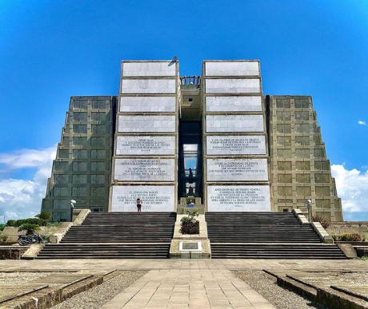
		<div class="mon1"><h3>Columbus Lighthouse </h3></div>
		<p class="mon-body">One of the great monuments that distinguish East Santo Domingo is theColumbus Lighthouse El Faro a Colón. The idea for the monument honoring the discoverer of America, Columbus, was started by Dominican writer Antonio del Monte and Tejada, according to his book “Historia de Santo Domingo”.

		This monument is located on the avenue Avenida Boulevard del Faro, in Villa Duarte. In 1914, William Ellis, of North American origin, promoted the statue’s erection event in Santo Domingo before U.S. press officials; in 1923 the idea of the lighthouse became a reality during the 5th International American Conference, a place where it was cooperatively agreed to begin construction. </p></div>
		
		<div class="monument">
		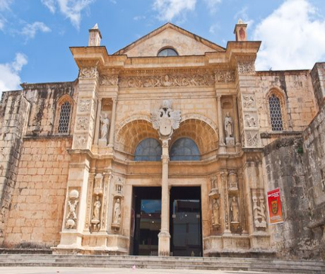
		<div class="mon2"><h3>The Cathedral of Santa María la Menor </h3></div>
		<p class="mon-body">The city of Santo Domingo and the Cathedral of Santa Maria La Menor is honored throughout the Americas as the birthplace of Christianity in the New World.  Although a Catholic site, it also predated any significant Protestant settlements in the Americas by many years.  For a while the city of Santo Domingo served as the headquarters of the Catholic Church in the New World, and the Cathedral its chief place of worship.
			For many years the Cathedral also had the added attraction of the Tomb of Christopher Columbus.  Santa Maria La Menor remains to this day the most important Christian shrine in the Caribbean, and is an all-but-mandatory pilgrimage stop for Christian tourists to the island.  </p></div>
	
	</div>
		
	

			
		<div class="monument-section">
		<div class="monument">
			
			<div class="mon3"><h3>National Pantheon of the Dominican Republic </h3></div>
			<p class="mon-body">The National Pantheon changed into constructed from 1714-1746 by way of the Spaniard Geronimo Quezada y Garçon and became originally a Jesuit church. The structure was built in the neoclassic-renaissance style. Today, the shape stands as a national symbol of the Dominican Republic and serves as the final resting location of the Republic’s most honored residents. 

			Jesuits held mass here till 1767. After 1767, it became used as a tobacco warehouse and then as the first Dominican theater for only inventive functions with the aid of the society Amantes de las Letras in 1860 till 1878 whilst it became theater La Republicana which operated till 1917.</p></div>
		
			<div class="monument">
		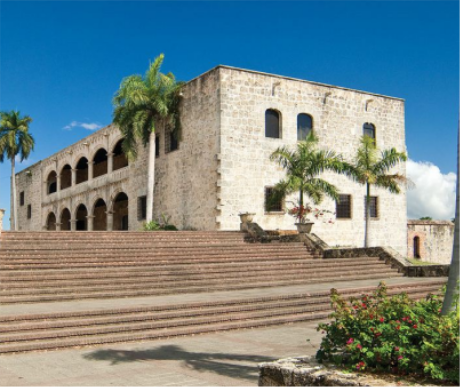
		<div class="mon4"><h3>Columbus Alcazar</h3></div>
		<p class="mon-body">The Alcázar is one of the most relevant spots in the Ciudad Colonial and the first fortified palace in the New World. Don Diego Columbus commanded the construction of his new residence; for that purpose he used Spanish builders in charge of 1,500 indigenous people. The structure, made up of coral rocks, was built between 1510 and 1514 following a design that mixed Spanish and Italian Renaissance, Gothic and Mudejar styles.

		The residence has been used as a home for the Columbus family of Toledo until approximately 1577. In 1586, the fearsome pirate Francis Drake invaded the city, and it seems he took an important number of valued treasures located in the Alcázar. </p></div>
			
	</div>
	
		</div> <!-- end container-->
		</section>
			
	
	
	
	
	
	
	<!-- culture-->
	
	<section class="culture">
	<div class="container">
	<div class="culture-header" id="culture"><h2>Culture</h2></div>
	<hr class="lines" attribute1 width="100%" color="#B52A1E" size="3" padding-bottom="">
		</div> <!-- end container-->
		</section>
		
<!-- culture picture-->
		
		<section class="cul-pic">
		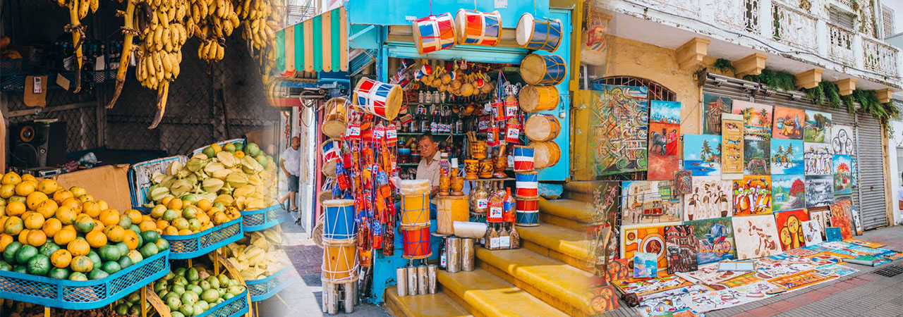
		</section>
		
<!-- culture content-->
	
		<section class="culture-copy">
		<div class="container">

		
			<p class="cul-intro">The island’s natives, the Taíno tribe, have passed down some of their own words and foods. Origins of the words for hammock and tobacco, for example, can be traced to the native Arawak language of the island. Similarly, local foods and agriculture form the basis of the current mix of culinary styles.</p>

		<div class="culture-section">
			<div class="culture-row">
		<p class="cul-body">Native crafts are extremely important as cultural expressions, and many vacationers choose to bring home these crafts as souvenirs. Mahogany and guano (dried palm tree leaf) rocking chairs are extremely popular, but other notable crafts are made from horn, snail, shell, wood, leather, amber, and larimar materials. Pottery, basketry, embroidery, and locally manufactured cottons are also popular.</p>

		<p class="cul-body"> Art is another popular cultural item. In spite of the many blights perpetrated by the dictator Trujillo, his fondness for painting did encourage the art community on the island. In fact, the Dominican Republic is home to an art school as well as a museum of modern art. Architecture is another important cultural aspect. As the new world’s first European city, architecture lovers will find many sites to explore. </p>
	</div>

		
		<div class="culture-row">
		<p class="cul-body">Merengue is the most popular form of music in the Dominican Republic, but bachata is the music of the rural country folk of the island. Salsa is another important musical form, filling out what is sometimes referred to as the trinity of island music. Music, however, is noticeably one of the most important components of Dominican culture. </p>

		<p class="cul-body">Local instruments help Dominican music stand out as a unique cultural form. The güira is a rhythmic instrument, which is made of a cylindrical brass grater. The güira, a scraped-out gourd, is rasped rhythmically with a fork. Tambora is a type of drum with the skin of a male goat tempered with rum on one side, and the skin of a female goat that has not given birth on the other side.  </p>
	</div>
		</div>
	
	</div><!-- End container-->
	</section>
	
	
	
	
	
	
	
	<!-- Attractions-->


	<section class="attractions">
		<div class="container">


		</div>
	</section>
	
	
	<section class="attractions">
		<div class="container">
		<h2 class="attractions-head" id="attractions">Attractions</h2>	
		<hr class="lines" attribute1 width="100%" color="#B52A1E" size="3" padding-top="70px">
		
		<div class="attractions-section" >
		<div class="attractions-box" >
		
			
		<div class="attractions-text">
		<h3 class="attractions-subhead">Museum of  Royal Houses</h3>
		<p class="attractions-caption">From its construction in 1511, it was used as Royal Audience, that is, Court of Justice with jurisdiction over the New World under the command of the King Ferdinand II of Aragon; it was used as the Palace of the Governors and General Captaincy until the east side was given to France and the Royal Audience moved to Cuba in 1799.</p>
		<button class="solid-btn"> Buy Tickets </button>
	</div>
</div>

			 <!-- End Project Text-->
			
			
			
			<div class=" attractions-box" >
		
		<div class="attractions-text">
		<h3 class="attractions-subhead">The Ozama Fortress</h3>
		<p class="attractions-caption">Built in 1502, Fortaleza Ozama, named after the nearby Ozama River, is considered to be the oldest fortress of European design in the New World. Spanish colonizers used Taino and African enslaved people to build the fortress using local coral stone, and the walls are almost 10 feet thick, making the fortress nearly impervious.</p>
		<button class="solid-btn2"> Buy Tickets </button>
	</div>
			</div> <!-- End Project Text-->
			
			
			
			<div class="attractions-box" >
		
		<div class="attractions-text">
		<h3 class="attractions-subhead">Museum of the Ataraznas</h3>
		<p class="attractions-caption"> A Dominican and world underwater treasure, of incalculable value, rests in the Museum of the Royal Atarazanas (MAR), a space that collects interesting finds of goods from our seabed originating in shipwrecks that occurred in the waters of the Dominican coast between the Centuries XV and XIX.</p>
		<button class="solid-btn3"> Buy Tickets </button>
			</div> <!-- End Project Text-->
			</div> <!-- End columns_3 project-box-->
			</div>
            
			</div> <!-- End container-->
			</section>
	
	
	
	
	
	<!-- Location-->
	
	
	<section class="location">
		<div class="container">
		<h2 class="location-head" id="location">Location</h2>	
		<hr class="lines" attribute1 width="100%" color="#B52A1E" size="3" padding-top="50px">
		<h3 class="location-description"> Ciudad Colonial, Santo Domingo, Dominican Republic </h3>
		<button class="solid-btn-map">Go to Google Maps </button>
		</div>	<!-- End container-->
	</section>
	
	<!-- Location picture-->
		<section class="map-pic">
		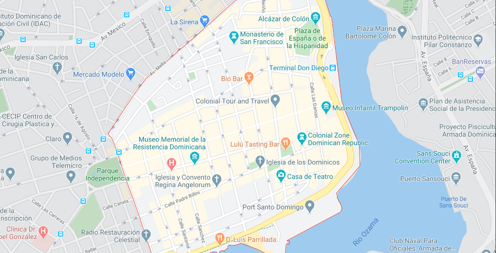
	
	<div class="container">
	</div>
	</section>
	
	
	
	
	
	
	<!-- testimonials-->
	
	<section class="testimonials">
		<div class="container">
		<h2 class="testimonials-head" id="testimonials">Testimonials</h2>	
		<hr class="lines" attribute1 width="100%" color="#B52A1E" size="3" padding-top="50px">
	<div class="testimonial-section">
	<div class="testimonial">
			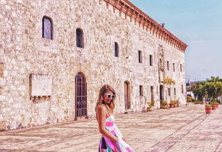

			<div class="test-content">
				<h3 class="test-names">Hannah Smith</h3>
			<p class="test-copy">Visiting the Colonial City of Santo Domingo has been a wonderful experience. I believe this is the perfect place to experience everything about the Dominican Culture. You are going to find art pieces all over the place and multiple stores selling Dominican souvernirs.</p></div>
					

		</div>
			
		
		<div class="testimonial">
			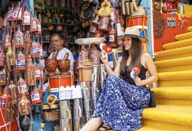
			
		<div class="test-content">
		<h3 class="test-names">Amanda Garcia</h3>
	<p class="test-copy"> I was delighted by the environment, everyone was friendly and welcoming. The are many jewelry stores selling amber and Stefilia’s Stone Jewelry. Then, I found out that Stefilia’s Stone is only found in the Dominican Republic. This is genuinely a unique place, that has found a way to transmit their culture in every aspect of life.</p></div>
	</div>
			
	<div class="testimonial">
			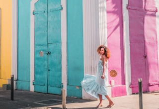
			
		<div class="test-content">
		<h3 class="test-names">Monique Velez</h3>
	<p class="test-copy"> This city has the perfect balance of history and fun activities at the same time. Most of the buildings are vintage because people are not allowed to reconstruct in that area. Even when I was going to a restaurant or a store, I was able to appreciate the history through their infrastructure.</p></div>

</div>
</div>
	

	</div>	<!-- End container-->
	</section>
	
	
	
	
	
	
	
	
	<!-- gallery-->
	
	<section class="gallery">
		<div class="container">
		<h2 class="gallery-head" id="gallery">Gallery</h2>	
		<hr class="lines" attribute1 width="100%" color="#B52A1E" size="3" padding-top="50px">
	
		<div class="gallery-section">


		<div class="gallery-images">
			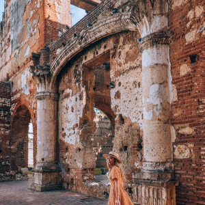
		
			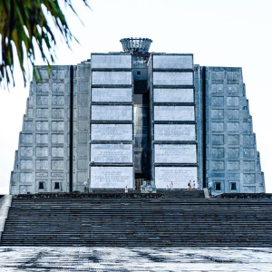
			
			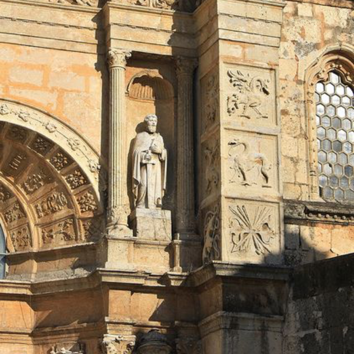
		</div>
		<div class="gallery-images">
			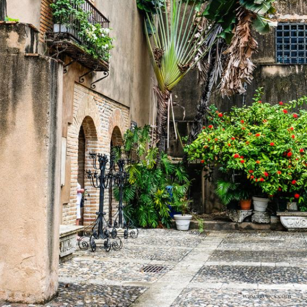

			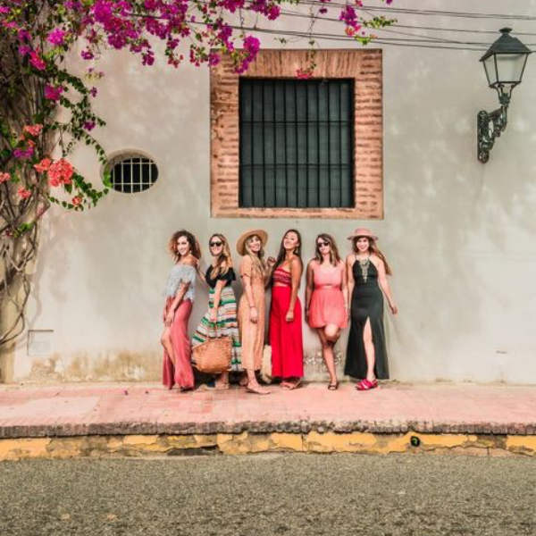

			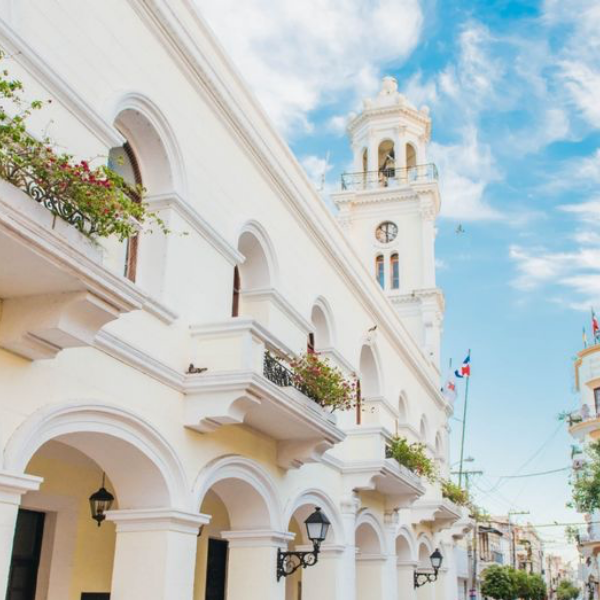
		</div>
			
			
			</div>
		</div>
			</section>
			
	
	
	
	
	
	
	
	
	<!-- videos-->
	
	<section class="videos">
		<div class="container">
		<h2 class="videos-head" id="videos">Videos</h2>
		<hr class="lines" attribute1 width="100%" color="#B52A1E" size="3" padding-top="50px">
			<h3 class="videos-description"> Visual Exploration of the Colonial City of Santo Domingo </h3>
			
			<div class="video-section">
		<div class="video"><iframe width="310" height="174" src="https://www.youtube.com/embed/vAsfhW0Py0Q" frameborder="0" allow="accelerometer; autoplay; encrypted-media; gyroscope; picture-in-picture" allowfullscreen></iframe>
			<p class="video-title"> Zona Colonial Santo Domingo | Things To Do In Dominican Republic</p>
		</div>
	
		<div class="video"><iframe width="310" height="174" src="https://www.youtube.com/embed/JvNCQDiwOCw" frameborder="0" allow="accelerometer; autoplay; encrypted-media; gyroscope; picture-in-picture" allowfullscreen></iframe>
		<p class="video-title"> Santo Domingo City Tour - Colonial Tour and Travel</p>
	</div>
	
		<div class="video"><iframe width="310" height="174" src="https://www.youtube.com/embed/FnOxO9vAfKc" frameborder="0" allow="accelerometer; autoplay; encrypted-media; gyroscope; picture-in-picture" allowfullscreen></iframe>
		<p class="video-title"> Recorrido por la Zona Colonial de Santo Domingo, República Dominicana</p>
	</div>
			</div> 
			
		</div>
		

			
			
			</div><!-- End container-->
			</section>
	
	
	
	
	
	
	
	<!-- About Unesco-->
	
	<section class="about-unesco">
		<div class="container">
		<h2 class="about-head" id="about">About Unesco</h2>	
		<hr class="lines" attribute1 width="100%" color="#B52A1E" size="3" padding-bottom="50px">
	
		<div class="unesco-section">
	
		<div class="unesco-row">
			<p class="about-copy"> UNESCO is the United Nations Educational, Scientific and Cultural Organization. It seeks to build peace through international cooperation in Education, the Sciences and Culture. UNESCO’s programmes contribute to the achievement of the Sustainable Development Goals defined in Agenda 2030, adopted by the UN General Assembly in 2015. </p>
			
			<h4 class="our-vision">Our Vision</h4>
			
			<p class="about-copy"> Political and economic arrangements of governments are not enough to secure the lasting and sincere support of the peoples. Peace must be founded upon dialogue and mutual understanding. Peace must be built upon the intellectual and moral solidarity of humanity. In this spirit, UNESCO develops educational tools to help people live as global citizens free of hate and intolerance. UNESCO works so that each child and citizen has access to quality education. By promoting cultural heritage and the equal dignity of all cultures, UNESCO </p></div>
		
			
			
			<div class="unesco-row">
			<p class="about-copy"> strengthens bonds among nations. UNESCO fosters scientific programmes and policies as platforms for development and cooperation. UNESCO stands up for freedom of expression, as a fundamental right and a key condition for democracy and development. Serving as a laboratory of ideas, UNESCO helps countries adopt international standards and manages programmes that foster the free flow of ideas and knowledge sharing.</p>

			<p class="about-copy">UNESCO’s founding vision was born in response to a world war that was marked by racist and anti-Semitic violence. Seventy years on and many liberation struggles later, UNESCO’s mandate is as relevant as ever. Cultural diversity is under attack and new forms of intolerance, rejection of scientific facts and threats to freedom of expression challenge peace and human rights. In response, UNESCO’s duty remains to reaffirm the humanist missions of education, science and culture. </p></div>

		</div>
		
		
		
			</div><!-- End container-->
			</section>
	
	
	
	
	

	
	
	
	<!-- signup-->
	
	<section class="signup">
	<div class="container">
	<h2 class="signup-head" id="signup"> Sign up </h2>
	<hr attribute1 width="100%" color="#B52A1E" size="3">
		
	<p class="signup-description">Sign Up to receive more information about all our different destinations all over the world</p>
		
		
		<div class="sign-section">
			<form class="email-form" action="web_form.php" method="post">
				<input id="email" type="text" name="email" placeholder="Enter your email address">
				</form>
			
		<button class="solid-btn-email" type="submit" >Submit</button>
			
			</div> <!-- End row-->
		</div> <!-- End container-->
	</section> 
	
	
	
	<!-- Footer-->
	<footer>
	<div class="container">
	<div class="copyright">

		<div class="footer-section">
	
		<div class="footer-logo"></div>
		
	
		<div class="footer-content">

<div class="footer-links">
	
			<li><a href="#monuments" class="footer-link">Monuments</a></li>
			<li><a href="#culture" class="footer-link">Culture</a></li>
			<li><a href="#monuments" class="footer-link">Location</a></li>
			<li><a href="#attractions" class="footer-link">Attractions</a></li>
			<li><a href="#location" class="footer-link">Location</a></li>
			<li><a href="#testimonials" class="footer-link">Testimonials</a></li>
			<li><a href="#gallery" class="footer-link">Gallery</a></li>
			<li><a href="#videos" class="footer-link">Videos</a></li>
			<li><a href="#about" class="footer-link">About</a></li>
			<li><a href="#signup" class="footer-link">Sign Up</a></li>
		</div>


			<div class="icons">
				<a href="#"><i class="fab fa-facebook-square"></i></a>
				<a href="#"><i class="fab fa-twitter-square"></i></a>
				<a href="#"><i class="fab fa-instagram-square"></i></a>
				<a href="#"><i class="fas fa-envelope-square"></i></a>
				<a href="#"><i class="fas fa-share-alt-square"></i></a>
				</div>	
				
				
				<p class="copyright-end"> &copy; 2020 UNESCO | All rights reserved. </p>
			
		
			
		</div>


		<div class="unesco-logo"></div>

	</div>
		
		
		
	

		
	
		
			
		
	
	
	
	<!-- JavaScript-->
	<script src="https://cdnjs.cloudflare.com/ajax/libs/jquery/3.3.1/jquery.min.js"></script>
	<script src="js/hugrid.js" type="text/javascript"></script>
	<script src="js/hugrid-functions.js" type="text/javascript"></script>
	
	

</body>
</html>
